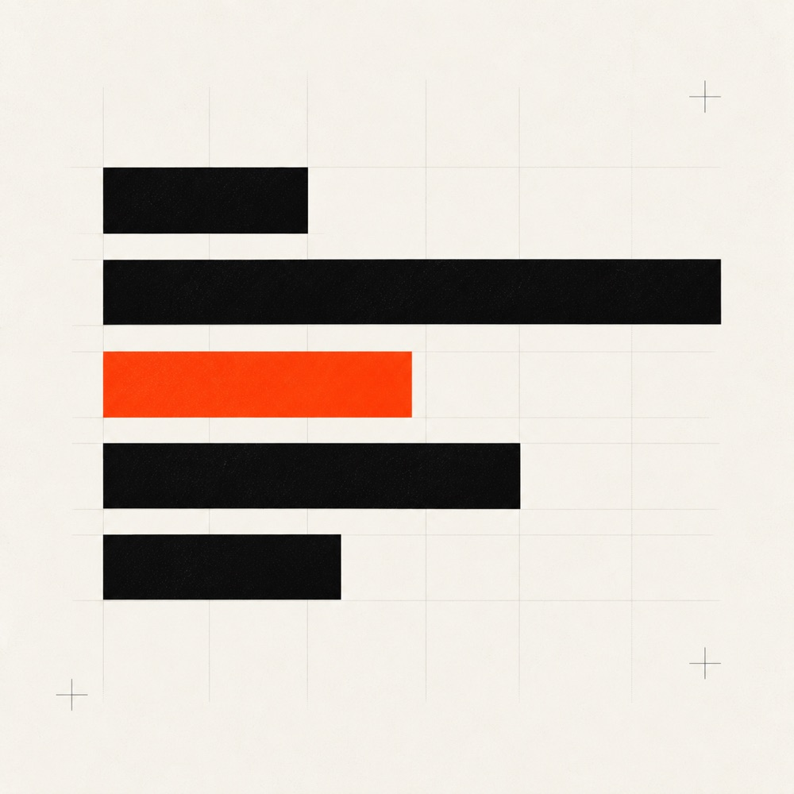

Field notes from production.
Teardowns of AI and security systems we've built. Opinions on where the consulting space is wrong. No fluff, no listicles, no AI-generated mush.

- Posts
- 15
- Updated
- 2026-05-29
- Topics
- AI engineering, security, compliance
- Read time
- 12 to 14 minutes
Prompt injection defenses for production LLM apps: what actually works
Prompt injection is the SQL injection of the LLM era, and most "defenses" you read about on Twitter do not survive a serious attempt. What we actually deploy in production: layered input handling, tool sandboxing, output filtering, and the architectural choices that close the most dangerous paths.
Read the postEvery post.
AI engineering, AI security, compliance, document agents, decision systems, and security testing. Newest first.
- 02AI cost optimization for South African businesses: what actually moves the bill The rand-dollar exchange rate makes every token expensive. Where the spend actually goes in production AI systems, the model and prompt choices that cut bills by 60 to 80 percent without losing quality, and the cheap optimisations most teams skip. AI Engineering 2026-05-29 · 12 min read
- 03Threat modelling AI systems: STRIDE for LLMs, agents, and RAG Classic STRIDE was written for systems that did what their code said. LLMs do not. How we adapt threat modelling for LLM apps, agent tool use, and RAG pipelines, with the attack surfaces most teams forget to enumerate before they ship. AI Security 2026-05-29 · 13 min read
- 04SQL agents that don't hallucinate: patterns for production text-to-SQL Most text-to-SQL demos work on a clean schema with five tables. Real warehouses have hundreds of tables, dirty joins, and columns whose names lie. The schema design, retrieval, and validation patterns that make a SQL agent answer real business questions without inventing tables. AI Engineering 2026-05-29 · 12 min read
- 05From LLM prototype to production: evaluations, observability, and shipping safely The notebook that wowed the demo is not a system. What we put in between to ship safely: evaluation harnesses that catch real regressions, observability that survives a 2 a.m. incident, and the release process that lets you iterate without breaking customers. AI Engineering 2026-05-29 · 13 min read
- 06POPIA compliance for AI systems: what section 19 actually asks of you Building AI that touches South African customer data? A working POPIA section 19 checklist for AI builders, plus how the Information Regulator's enforcement notices are reshaping what "appropriate, reasonable" actually means. Compliance 2026-05-28 · 13 min read
- 07What a real APT simulation finds in a South African fintech (and why scanners don't) A scanner finds "this port is open." A red team finds "I am inside your finance director's mailbox forwarding wire-transfer instructions." The gap is what determines whether you survive an actual attack. Security 2026-05-28 · 13 min read
- 08Vulnerability assessment vs penetration testing: which one do you actually need? Both produce a security report. They are very different products. Which one you need depends on whether you're checking a box, hardening a system, or proving control to a regulator. Security 2026-05-28 · 12 min read
- 09Disaster recovery planning for South African fintech: from RTO/RPO to the call at 2 a.m. Your DR document is for the auditor. Your runbook is for the engineer at 2 a.m. when the database is gone. Both have to exist. Here's how we write them, what to actually test, and where most SA fintechs are exposed. Security 2026-05-28 · 12 min read
- 10AI workflow automation for South African SMEs: what actually works (and what wastes money) Make, Zapier, n8n, and LLM-augmented workflows are everywhere. How to pick patterns that actually save time in an SA SME context, what to never automate, and how to keep the system maintainable past month three. Workflow Automation 2026-05-28 · 12 min read
- 11Your vibe-coded app is a security liability. Here's how we fix it. Apps shipped by a non-engineer with the help of Claude or Cursor are everywhere. Most of them ship secrets in repos, run on root-owned servers, and trust user input the model said was fine. A field guide to whitebox security review for the vibe-coded stack. Security 2026-05-28 · 14 min read
- 12Why every fintech needs an AI audit before they buy a platform The "AI platform" you're about to sign for will automate less of your operation than the demo implied and break things the demo did not show. A paid two-week audit, run honestly, will tell you that for less than the first month's licence fee. Here's how we run them. AI Strategy 2026-05-28 · 12 min read
- 13Penetration testing for South African fintech: what FSCA and FICA actually expect POPIA fines are real. So are the FSCA/PA Joint Standards that put cyber risk on the board, and the SARB NPS Directive 1 of 2024. What an actual fintech-grade pentest covers, and what the regulator does when you can't produce one. Security 2026-05-28 · 13 min read
- 14Document agents on real client data: what nobody tells you about RAG in production Tutorials show you RAG against the Wikipedia dump. Real client data has scanned faxes, mid-2010s Word docs, contradictory contracts, and a board memo that contradicts the contract. How we ship document agents that survive contact with reality. Document Agents 2026-05-28 · 13 min read
- 15Decision systems that route to humans (and when they shouldn't) The point of an AI decision system is not to remove humans. It's to put humans on the cases where they matter and free them from the cases where they don't. Three patterns we use, when each one breaks, and how we choose. Decision Systems 2026-05-28 · 12 min read

Don't wait for the blog.
We're booking Q3/Q4 2026 engagements. Most start with our productised AI Audit.